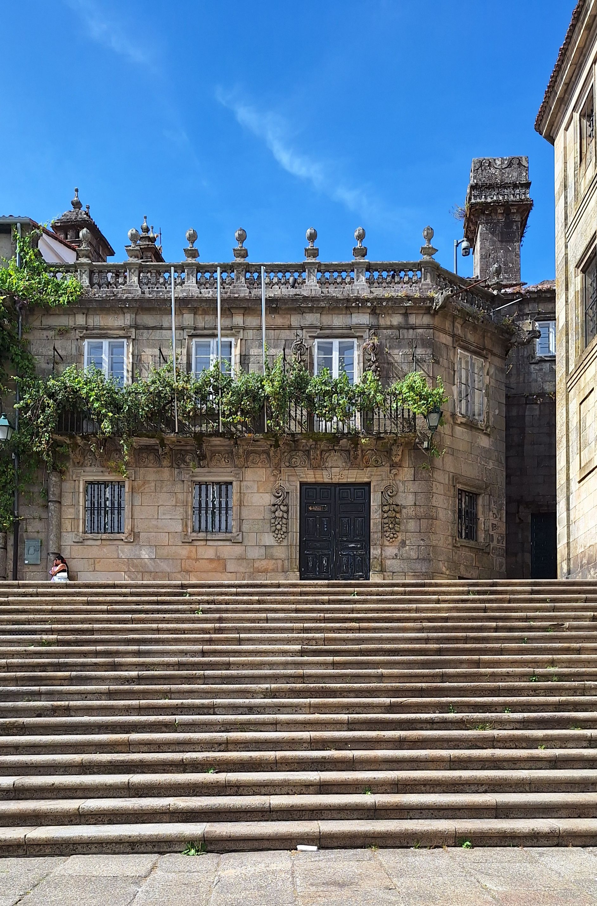
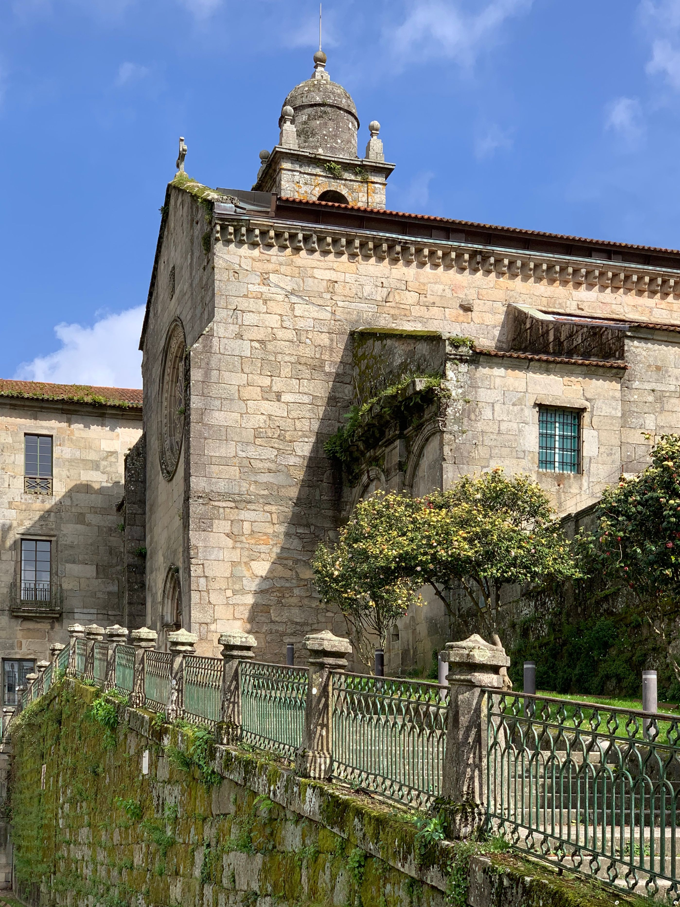
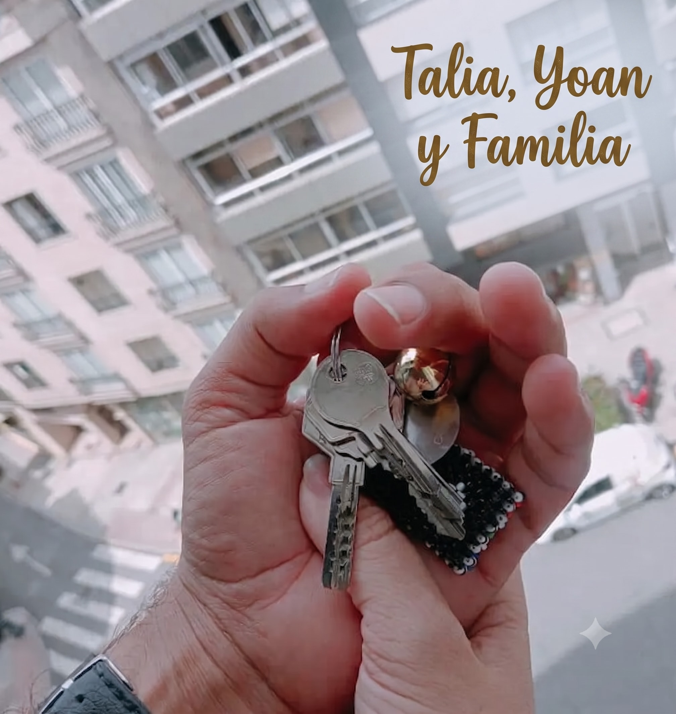
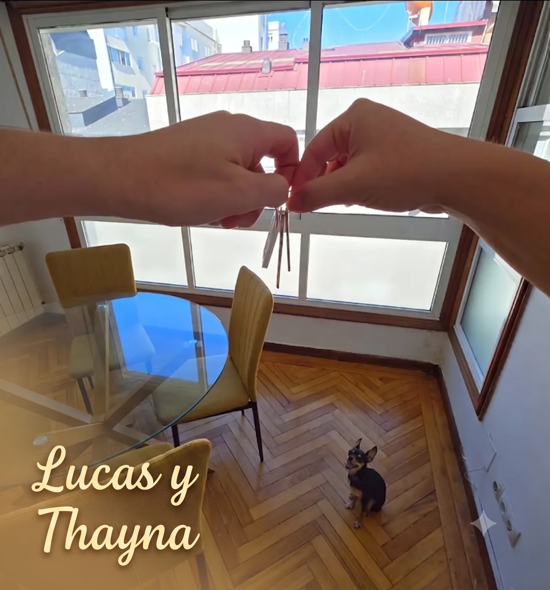
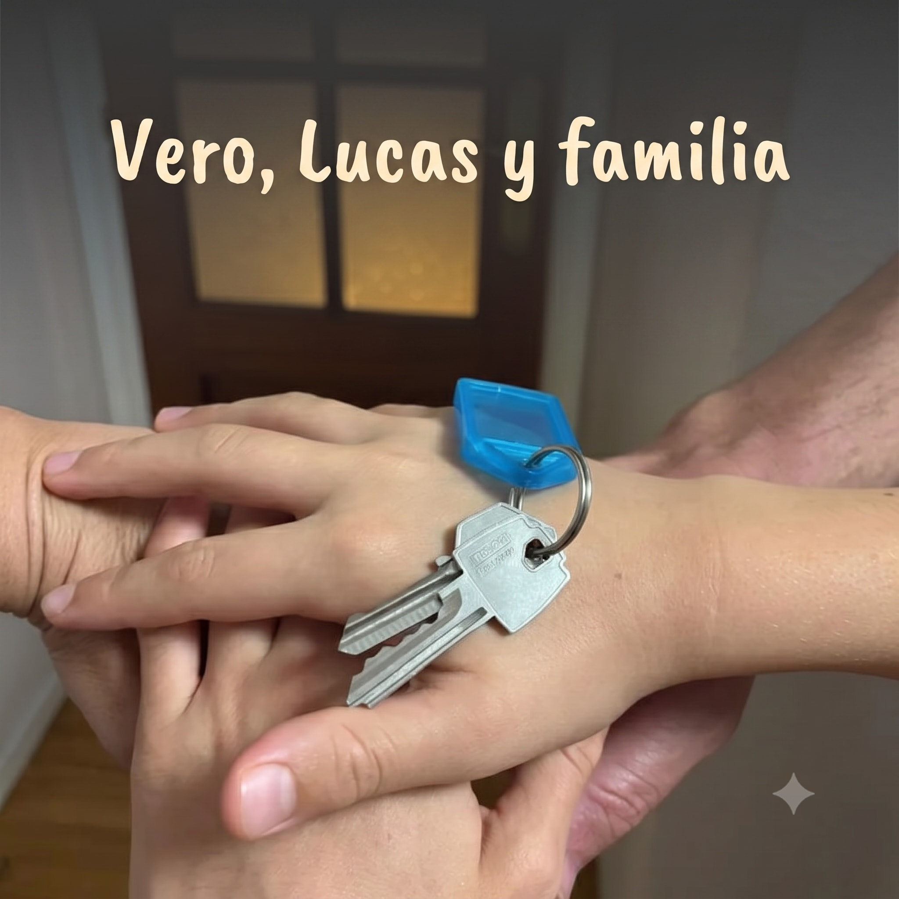
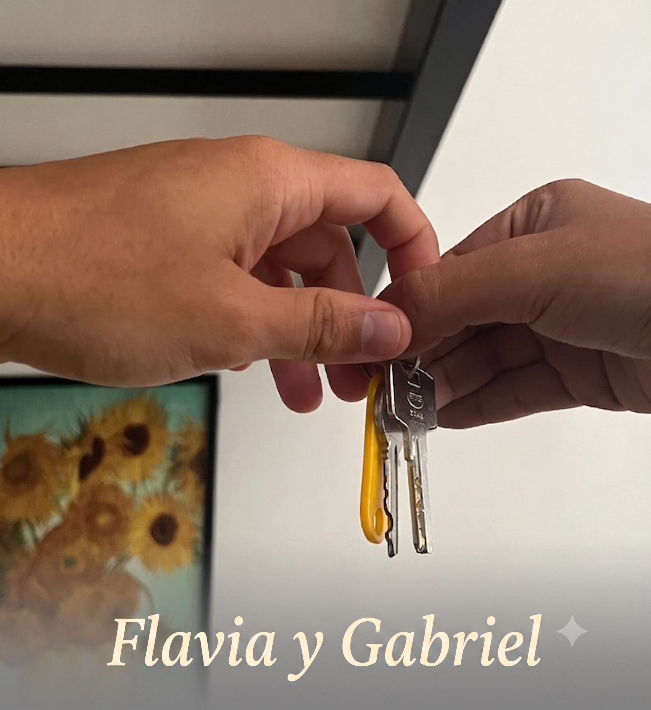
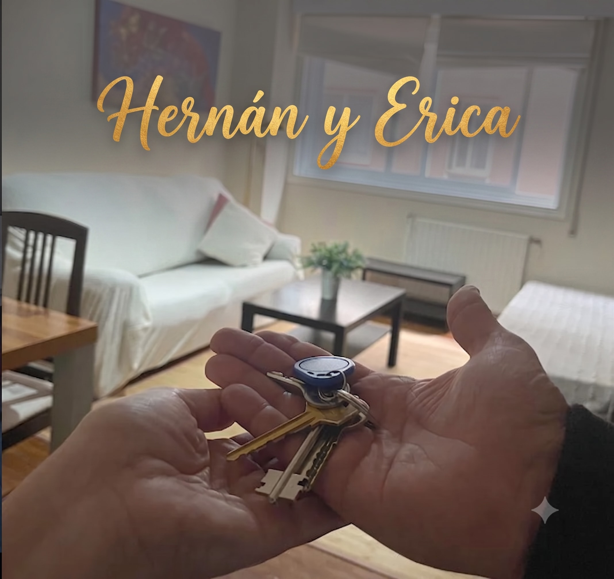
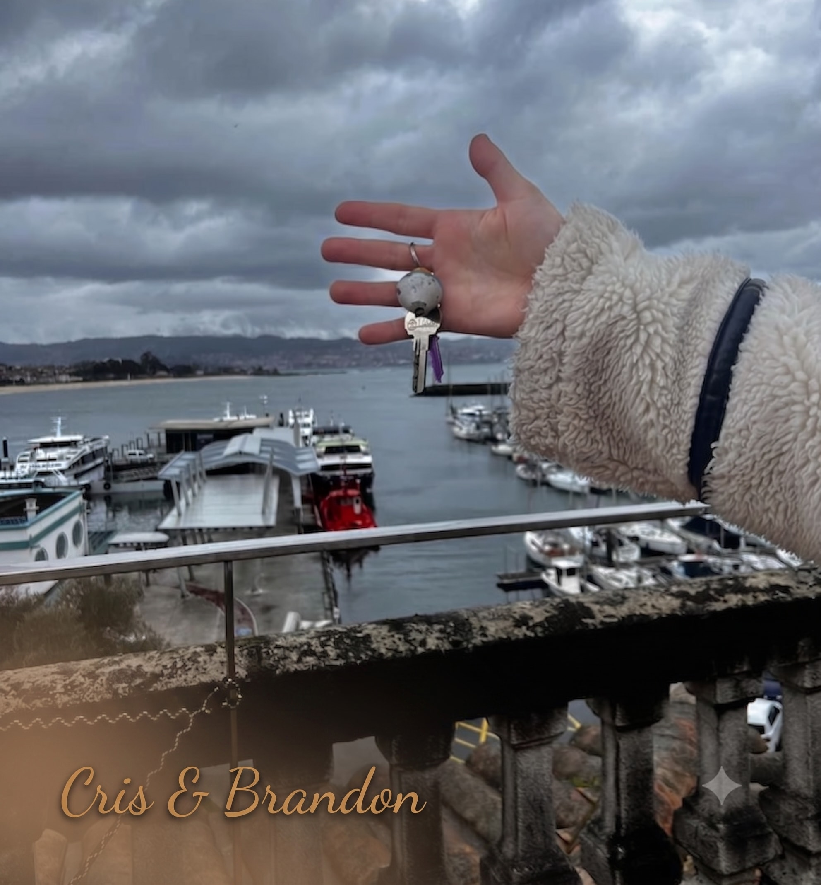

▶
Litoral · Atlántico
A Coruña
38 familias reubicadas · alquiler medio 720€
Gestionamos todo el proceso a distancia, con honestidad y criterio profesional, para que tu única tarea al llegar sea abrir tu puerta.
Cinco ciudades activas
38 familias reubicadas · alquiler medio 720€
52 familias reubicadas · alquiler medio 690€

29 familias reubicadas · alquiler medio 650€
11 familias reubicadas · alquiler medio 590€

14 familias reubicadas · alquiler medio 610€
Muro de llaves






"Nos dijo qué zona no nos convenía antes de que gastáramos en el pasaje. Eso no lo hace cualquiera."
— familia reubicada en A Coruña, 2026Cómo funciona
Seis preguntas con Gina, sin formulario eterno.
Descarta lo que no te conviene antes de mostrártelo.
25 minutos, agenda real de Silvana, no un bot.